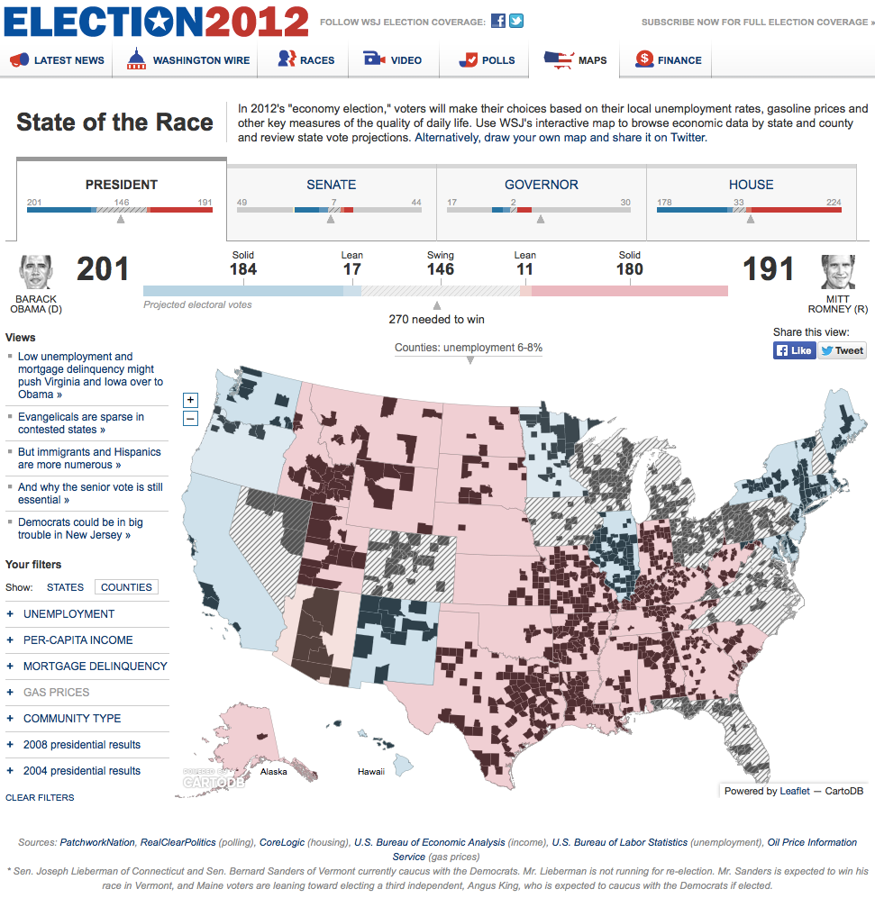

CartoDB
An open source mapping platform
cartodb.com/ 
Between 2012 and 2013, I was a member of the team launching and developing open source engine CartoDB, currently being used by journalists and media organizations across the world, including The Wall Street Journal, The Guardian, National Geographic, Columbia Univ. J-School, and Stanford University J-School.
In 2012, CartoDB was a finalist at the 2012 Online News Association Journalism Awards as a Technical Innovation in the Service of Digital Journalism.
The Guardian Data Blog and the CartoDB team built several dynamic, data-driven maps.
This one shows all Syria deaths occurred in a year due to the civil war.

The WSJ 2012 electoral map was one of the first large applications built with CartoDB.